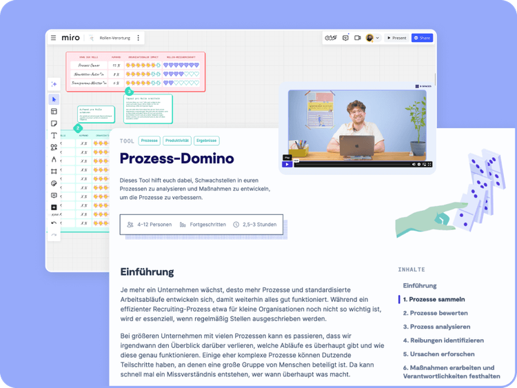

Business
ab 5 Nutzer*innen
Zugang für ausgewählte Nutzer*innen
Wir glauben: In bewegten Branchen braucht es starke Teams und reibungslose Abläufe. Mit den 9 Spaces Methoden stärkt ihr eure Zusammenarbeit und macht eure Organisation zukunftsfest.
Hier erfahrt ihr, wie ihr eure Arbeitswelt in Transport, Tourismus & Logistik transformiert.

Viele der 4.500 Mitarbeiterinnen und Mitarbeiter von Lufthansa Technik stecken in Arbeitstagen mit Meeting-Endlosschleifen fest. Eine interne Community aus Facilitatoren soll das mithilfe von 9 Spaces ändern – und eine neue Meeting-Kultur etablieren.
Fachkräftemangel: Im vierten Quartal 2024 gaben rund 57 % der Transportunternehmen im Landverkehr an, dass ihre Geschäftstätigkeit durch Personalmangel behindert wird. Gerade operative Bereiche wie Lager und Fahrdienste sind betroffen.
Digitalisierung unter begrenzten Ressourcen: 46 % der touristischen Betriebe sehen Digitalisierung als zentrales Zukunftsthema – doch es fehlt oft an Zeit, Budget oder Know-how.
Nachhaltigkeit als Wettbewerbsfaktor: Mehr als die Hälfte der Logistik-Geschäftsführer*innen nennt Klimaschutz und Nachhaltigkeit als zentrale Themen. Oft fehlen jedoch konkrete Ansätze, diese Themen wirksam in den eigenen Routinen und dem Arbeitsalltag zu verankern.
Effiziente Zusammenarbeit: Unsere Workshop-Tools stärken Teams, entlasten den Arbeitsalltag und helfen, vorhandene Ressourcen besser zu nutzen.
Digitale Transformation: Klare Strukturen, einfache Tools und sofort einsetzbare Workshops machen digitale Zusammenarbeit auch mit wenig Budget möglich.
Nachhaltige Prozesse: Mit 9 Spaces entwickelt ihr nachhaltige Ideen weiter, denkt Prozesse klimafreundlich und gewinnt Mitarbeitende für den Wandel.
Quellen: Statista I, Statista II, Statista III, Roland Berger
Mit über 150 praxiserprobten Workshop-Methoden für online und offline unterstützt 9 Spaces euch bei Themen wie Konflikte, Leadership, Meetings, Prozesse oder Nachhaltigkeit.

Aufgeteilt in drei Module helfen sie euch, zentrale Herausforderungen wie Personalengpässe, Digitalisierung und Nachhaltigkeit praxisnah zu bearbeiten.
Große Veränderungen können schnell überwältigend wirken. Mit der maßgeschneiderten Transformationsreise bekommt ihr ein Planungs-Tool für die Transfromation, individuell auf eure Herausforderungen abgestimmt.
Zugang für ausgewählte Nutzer*innen
Alle Features und Mehrwerte auf einem Blick?
Unser Team unterstützt dich und dein Team gerne dabei, die perfekte Lösung für eure Organisation zu finden.